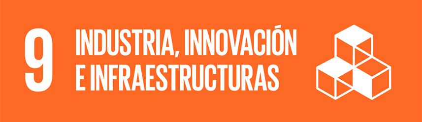

¿Cuál es el objetivo principal de este ODS según la ONU?
El ODS 9 de la ONU busca impulsar un desarrollo sostenible apoyándose en infraestructuras sólidas, industrias modernas e innovación. Su propósito es crear un entorno donde los países puedan crecer de manera inclusiva, fortaleciendo sus sistemas de transporte, energía y comunicación, promoviendo industrias que generen empleo sin dañar el ambiente y estimulando la investigación y la tecnología como motores clave para mejorar la calidad de vida y reducir desigualdades.
¿Qué relación tiene con la tecnología o la informática?
El ODS 9 está estrechamente ligado a la tecnología y la informática porque la innovación digital es una de las bases para construir infraestructuras modernas y lograr una industrialización sostenible. La expansión del acceso a internet, el desarrollo de sistemas informáticos eficientes, la automatización, la inteligencia artificial y las soluciones digitales para la producción y los servicios son herramientas clave para mejorar la productividad, reducir el impacto ambiental y cerrar brechas entre países y comunidades. En esencia, la tecnología actúa como motor que permite que las industrias evolucionen, que las infraestructuras sean más inteligentes y resilientes, y que la sociedad avance hacia modelos de desarrollo más sostenibles e inclusivos.
¿Qué problemas o retos ambientales/sociales afectan al logro de este objetivo? (describe al menos tres)
| Problema clave | Impacto | Soluciones tecnológicas |
|---|---|---|
| Brecha digital | Limita el acceso a la educación, la innovación y las oportunidades económicas. | Expansión de redes de banda ancha, satélites de internet, centros comunitarios digitales. |
| Infraestructuras obsoletas | Reduce la productividad y dificulta el desarrollo industrial sostenible. | Sensores IoT para mantenimiento predictivo, sistemas inteligentes de transporte y energía. |
| Contaminación industrial | Aumenta las emisiones, genera residuos y degrada ecosistemas y salud humana. | Tecnologías limpias, energías renovables, sistemas de monitoreo ambiental en tiempo real. |
¿Cómo influye la actividad tecnológica en esos problemas (de forma positiva o negativa)?
| Problema clave | Influencia |
|---|---|
| Brecha digital | La tecnología puede reducirla al ampliar la conectividad y el acceso a servicios, pero también puede ampliarla si solo llega a ciertos sectores, aumentando desigualdades. |
| Infraestructuras obsoletas | La innovación tecnológica moderniza y hace más eficientes las infraestructuras, aunque puede generar dependencia de recursos costosos y elevar el consumo energético. |
| Contaminación industrial | Las tecnologías limpias y de monitoreo ayudan a disminuir impactos ambientales, pero la fabricación y desecho de equipos tecnológicos también puede generar contaminación. |
¿Qué soluciones tecnológicas podrían aplicarse para mitigarlos o resolverlos?
| Problema clave | Soluciones propuestas |
|---|---|
| Brecha digital | Ampliación de redes de banda ancha, internet satelital, centros comunitarios digitales, programas de capacitación tecnológica. |
| Infraestructuras obsoletas | Implementación de IoT para mantenimiento predictivo, sistemas inteligentes de energía y transporte, digitalización de procesos industriales. |
| Contaminación industrial | Tecnologías limpias, energías renovables, sistemas de monitoreo ambiental en tiempo real, optimización de procesos mediante IA. |
¿Qué ejemplos o casos reales conoces (empresas, proyectos, iniciativas)?
guifi.net
Una red comunitaria, abierta y neutral, que surgió en zonas rurales de Cataluña (España) para ofrecer acceso a internet donde la cobertura era insuficiente. Hoy en día cuenta con miles de nodos activos y conecta comunidades mediante una red basada en tecnología inalámbrica y fibra óptica compartida.
guifi.net - Home Page
Nepal Wireless Networking Project (NWNP)
En Nepal, este proyecto ha llevado conectividad a Internet, servicios educativos, salud, comercio y otras oportunidades a pueblos remotos usando tecnologías inalámbricas, reduciendo la desigualdad digital en zonas de difícil acceso.
Nepal Wireless Networking Project - Wikipedia
Serenae
Conectividad satelital en zonas rurales de España: esta empresa impulsa el uso de internet por satélite en pueblos rurales del país, ofreciendo velocidades cercanas a 100 Mbps con coste accesible, lo que permite cerrar la brecha de conectividad allí donde no llega la fibra ni redes fijas convencionales.
Serenae - Redes Telecom
¿Qué indicadores o métricas podrían usarse para medir el progreso hacia este ODS?
Para medir el progreso hacia el ODS 9, se utilizan indicadores que reflejan avances en infraestructura, industrialización e innovación. Algunos ejemplos relevantes son:
Inversión en investigación y desarrollo (I+D)
Acceso a internet y conectividad
Producción industrial manufacturera
Número de patentes registradas
Calidad y resiliencia de infraestructuras
Empleo en sectores industriales